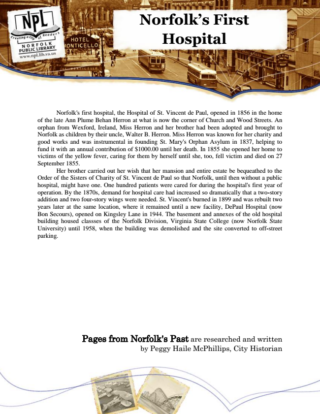

Norfolk’s First Hospital
Norfolk's first hospital, the Hospital of St. Vincent de Paul, opened in 1856 in the home of the late Ann Plume Behan Herron at what is now the corner of Church and Wood Streets. An orphan from Wexford, Ireland, Miss Herron and her brother had been adopted and brought to Norfolk as children by their uncle, Walter B. Herron. Miss Herron was known for her charity and good works and was instrumental in founding St. Mary's Orphan Asylum in 1837, helping to fund it with an annual contribution of $1000.00 until her death. In 1855 she opened her home to victims of the yellow fever, caring for them by herself until she, too, fell victim and died on 27 September 1855.
Her brother carried out her wish that her mansion and entire estate be bequeathed to the Order of the Sisters of Charity of St. Vincent de Paul so that Norfolk, until then without a public hospital, might have one. One hundred patients were cared for during the hospital's first year of operation. By the 1870s, demand for hospital care had increased so dramatically that a two-story addition and two four-story wings were needed. St. Vincent's burned in 1899 and was rebuilt two years later at the same location, where it remained until a new facility, DePaul Hospital (now Bon Secours), opened on Kingsley Lane in 1944. The basement and annexes of the old hospital building housed classses of the Norfolk Division, Virginia State College (now Norfolk State University) until 1958, when the building was demolished and the site converted to off-street parking.
Pages from Norfolk's Past are researched and written by Peggy Haile McPhillips, City Historian